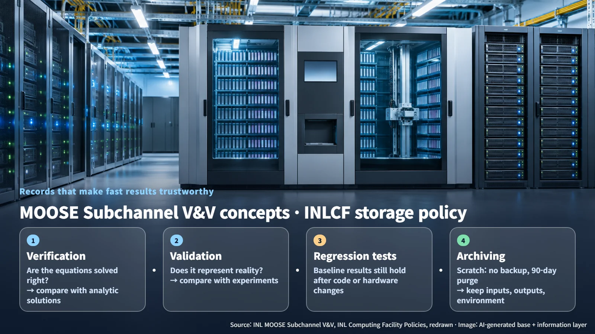

US · INL · High-performance computing
Who Gets to Use INL's New Arco Supercomputer? Free Access Rules and Verifying Reactor Simulations
INL's new Arco supercomputer, with 160 NVIDIA H200 GPUs, is open free of charge to non-proprietary nuclear research selected through a rolling competitive call.
A national laboratory supercomputer available at no cost raises two questions: who can use it, and how do we know a fast reactor simulation got the right answer? In reactor safety work, trust in a result matters as much as speed.
On November 18, 2026, the US Department of Energy (DOE) introduced Arco, a new supercomputer at Idaho National Laboratory (INL). Arco is part of the INL Computing Facility (INLCF), which was recently designated a high-performance computing (HPC) user facility by DOE's Office of Nuclear Energy. Outside researchers can apply to use a user facility, and support from the Nuclear Science User Facilities program widens access for the nuclear research community. Below: what it takes to use Arco, and what records make its results trustworthy.
The Conditions for Free Access: Open Research, a Sponsor, and Access Approval
DOE says access is free of charge for non-proprietary research and development, through a continuously open competitive call. Non-proprietary research is work whose results can be published and shared. INLCF supports open R&D by industry, universities, national laboratories, and federal agencies, and access is generally granted to research tied to DOE Office of Nuclear Energy and INL missions. In short, free access applies when an open research project is selected through the competitive process. Projects that would use proprietary design data or contract-restricted data discuss what can be made public and under what conditions before applying.
Based on INL's published policies, the path from application to running jobs can be summarized in four steps:
| Step | What is checked | Notes | |---|---|---| | 1. Research fit | Open research related to nuclear energy and INL missions | Proprietary data discussed in advance | | 2. Sponsor and account | An INL collaborator named as sponsor; account request through NCRC | Processing takes 2 to 8 weeks | | 3. Access approval | Foreign national approval, export control and sanctions, multi-factor authentication | International Access Program | | 4. Running jobs | Queue position based on fair-share and mission priority | Priority boosts need separate approval |
(Source: INL, INL Computing Facility Policies, adapted)
Accounts are requested through Make/Manage Requests at the Nuclear Computation Resource Center (NCRC), and INL says processing can take 2 to 8 weeks. Eight weeks is close to two months, so account setup belongs at the start of a project schedule. Every user names an INL collaborator as sponsor, who understands the research and coordinates use and access approvals.
Foreign nationals need International Access Program approval, and export control and sanctions restrictions apply, so nationality, affiliation, connection location, and codes must match across the application. NCRC also provides tools and training from DOE's advanced nuclear modeling and simulation program, so a research plan should cover approval and licenses for the codes it needs.
Once an account is open, the scheduler sets priority by a fair-share metric and mission importance; a time-limited priority boost can be requested in special cases with separate approval. External user accounts are generally renewed every year. Per-project allocations, selection scores, and individual processing deadlines are not listed in the published policies, so the next step is to confirm them with INL staff during the application and then lock in the schedule.
Results Can Disappear After 90 Days: Moving and Preserving Data
Job output lands in temporary storage called scratch. Under INL policy, scratch and other temporary storage are excluded from backup, and scratch files are generally purged every 90 days, or sooner if needed, like a workshop bench cleared on a schedule.
Users can also lose access when an account expires, and a project directory can be deleted if its owner has no successor. Users therefore need their own plan for moving inputs, results, and run-environment records, and should name who takes over the data and where it is stored before the project ends. That is what keeps an analysis reproducible.
Project directory access is granted on the owner's written request, and before any external transfer the sponsor and requester must complete the required approvals, such as institutional review, contracts, and export control. INLCF staff support approved transfers; ownership and publication rights follow the user's home institution procedures. INLCF's security categorization is FIPS-199 moderate, which each project weighs against its own security and contract requirements.
Free access is tied to open research, and preserving data is the user's job. For published work, keeping input files and the run environment so others can repeat the calculation is part of the research, and moving data off the machine belongs in the plan next to compute time.
Making Fast Calculations Trustworthy: Verification, Validation, and Regression Testing
Speed only counts if the result can be trusted. The documentation for the Subchannel module of MOOSE, INL's computational framework (the module models coolant flow through the narrow channels between fuel rods), splits that trust into two kinds of evidence.
- Verification checks that the chosen equations are being solved correctly. Results are compared against analytical solutions to simple problems, reference values derived directly from the equations, to catch errors in the numerical implementation.
- Validation checks that the results represent reality adequately. Calculated values are compared against experimental data.
Put simply, verification asks "Did we solve the equations right?" and validation asks "Did we solve the right equations?" Verification confirms you followed the recipe; validation tastes the dish. A code that solves its equations precisely still needs a separate check against experiments that its physics models and boundary conditions fit the problem.
The third tool is automated regression testing. The Subchannel module tracks the effects of code changes continuously and runs automated regression tests, which compare current results on established reference cases against earlier ones after every change. This is especially valuable when work moves to new hardware. By keeping reference-problem results from earlier machines and rerunning the same problems on GPU-based Arco, a team can show numerically that results hold steady after the hardware and run environment change.
As computing power grows, so must the records of analysis quality: reference solutions and errors, measured-versus-calculated gaps, code versions and inputs, job settings and storage locations. With those, another researcher can reach the same conclusion. The exact scope of these records and the acceptable error criteria are set by the project lead according to the code's quality program and the research goals.

Arco opens a wider door to computing for nuclear researchers, and that opportunity comes paired with the condition of open research and the responsibility of reproducible records. A natural next question is what results this kind of computing delivers in projects such as Prometheus, where AI is applied to design and licensing.